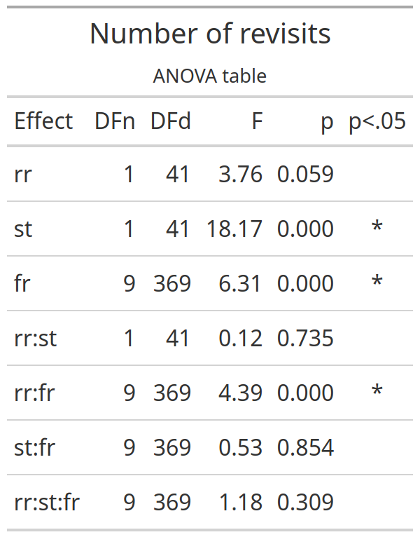
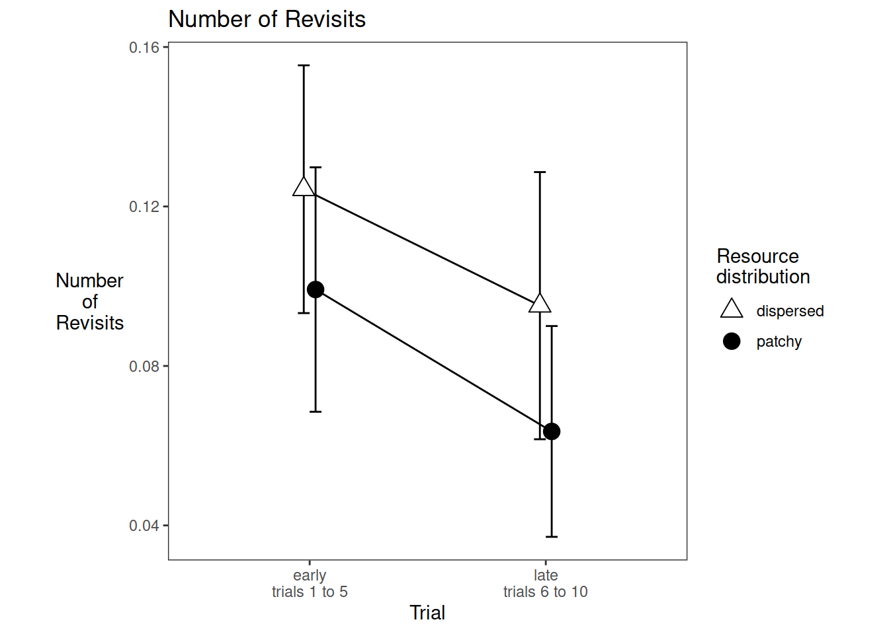

4 Number of revisits grand analysis
Experiment 1
This is a 2 (resource distribution) x 2 (trial stage) x 10 (sequential fruit consumed) analysis.
4.1 Form the dataset
e1.raw <- readRDS("001-00-e1-data.RDS")
e1.sub <- e1.raw %>% select(pp, rr, tb, ix, tl, fl, fr)
e1.ann <- e1.sub %>%
# remove samples that did not look at a tree
filter(fl>0) %>% select(-fl) %>%
# identify consecutive dupes for removal
mutate(dupe = !(is.na(tl != lag(tl)) | tl != lag(tl))) %>%
# remove dupes
filter(dupe==FALSE) %>%
# annotate with revisit
group_by(pp, rr, tb) %>% mutate(isrv = duplicated(tl)) %>% ungroup() %>%
# annotate with max fruit
group_by(pp, rr, tb) %>% mutate(maxf = max(fr)) %>% ungroup() %>%
# remove samples in the tenth fruit
filter(fr !=10)
# make sure each trial has an entry for the zeroth fruit
merge_me = expand_grid(pp = sort(unique(e1.ann$pp)), rr = sort(unique(e1.ann$rr)), tb = sort(unique(e1.ann$tb)), fr = 0)
e1.ann2 <- full_join(e1.ann, merge_me) %>% arrange(pp, rr, tb, fr)
#> Joining with `by = join_by(pp, rr, tb, fr)`
# redo isrv such that the zeroth fruit has FALSE for isrv instead of NA
e1.ann2 <- e1.ann2 %>% replace_na(list(isrv=FALSE))
# redo maxf to replace NA with whatever the max was for that trial
e1.ann2 <- e1.ann2 %>% group_by(pp,rr,tb) %>% mutate(maxf=max(maxf, na.rm=TRUE)) %>% ungroup()
# remove trials with maxf less than 10
e1.ann3 <- e1.ann2 %>% filter(maxf == 10)
# add stage
e1.ann3 <- e1.ann3 %>% mutate(st=ifelse(tb<=5, "early", "late"))
# aggregate such that there is a row for each fruit visited (including the zeroth but not the tenth)
# saying how many (sum) revisits there were while searching for that fruit
e1.agg1 <- e1.ann3 %>%
group_by(pp, rr, st, tb, fr) %>%
summarise(nrev=sum(isrv)) %>%
ungroup()
# aggregate over trials to give mean sum revisits at the relevant fruit for each stage
e1.agg2 <- e1.agg1 %>%
group_by(pp, rr, st, fr) %>%
summarise(murev=mean(nrev)) %>%
ungroup()
dd = e1.agg2
dd <- dd %>% mutate(pp=as_factor(pp), rr=as_factor(rr), st=as_factor(st), fr=as_factor(fr))ANOVA now
This is the ANOVA table
knitr::include_graphics("e1_tables/e1_nrevisits_grand_ANOVA.png")
4.2 Means
4.2.1 Significant stage effect means
Now we want grand means for the significant stage effect.
stage_means = dd %>%
group_by(st, pp, rr, fr) %>%
summarise(mu=mean(murev)) %>%
summarise(mu=mean(mu)) %>%
summarise(mu=mean(mu)) %>%
summarise(mean=mean(mu), sd=sd(mu)) %>%
mutate(mean=round(mean,2), sd=round(sd,2))
stage_means %>% knitr::kable()| st | mean | sd |
|---|---|---|
| early | 0.11 | 0.08 |
| late | 0.08 | 0.07 |
4.2.2 Significant fruit effect means
fruit_means = dd %>%
group_by(fr, pp, rr, st) %>%
summarise(mu=mean(murev)) %>%
summarise(mu=mean(mu)) %>%
summarise(mu=mean(mu)) %>%
summarise(mean=mean(mu), sd=sd(mu)) %>%
mutate(mean=round(mean,2), sd=round(sd,2))
# We report the first and tenth value
fruit_means %>% filter(fr%in%c(0,9)) %>% knitr::kable()| fr | mean | sd |
|---|---|---|
| 0 | 0.06 | 0.07 |
| 9 | 0.19 | 0.21 |
The average number of revisits made while searching for the first fruit item was 0.06 +/- 0.07. The average number of revisits made while searching for the last fruit item was 0.19 +/- 0.21.
4.3 Interaction plots
4.3.1 Stage x Resources
We write code for the plot of the stage x resources interaction. The stage effect is significant but the interaction isn’t.
data_for_plot <-
dd %>% group_by(st, rr, pp) %>%
summarise(mean_revisits=mean(murev))
pd <- position_dodge(0.1)
require(Hmisc)
e1_nrevisits_grand_PLOT <-
ggplot(data=data_for_plot, aes(x=st, y=mean_revisits, group=rr, pch=rr, fill=rr))+
theme_bw()+
theme(aspect.ratio = 1, panel.grid=element_blank(), axis.title.y=element_text(angle=0,vjust=0.5,hjust=0.5))+
scale_fill_manual(name="Resource\ndistribution",values=c("white", "black")) +
scale_shape_manual(name="Resource\ndistribution",values=c(24,19)) +
stat_summary(fun.data = mean_cl_normal, geom = "errorbar", width=0.1, position=pd) +
stat_summary(fun = mean, geom = "line", position=pd) +
stat_summary(fun = mean, geom = "point", size=4, position=pd)+
ggtitle("Number of Revisits")+
ylab("Number\nof\nRevisits")+
xlab("Trial")+
scale_x_discrete(labels=c("early\ntrials 1 to 5", "late\ntrials 6 to 10"))
e1_nrevisits_grand_PLOT